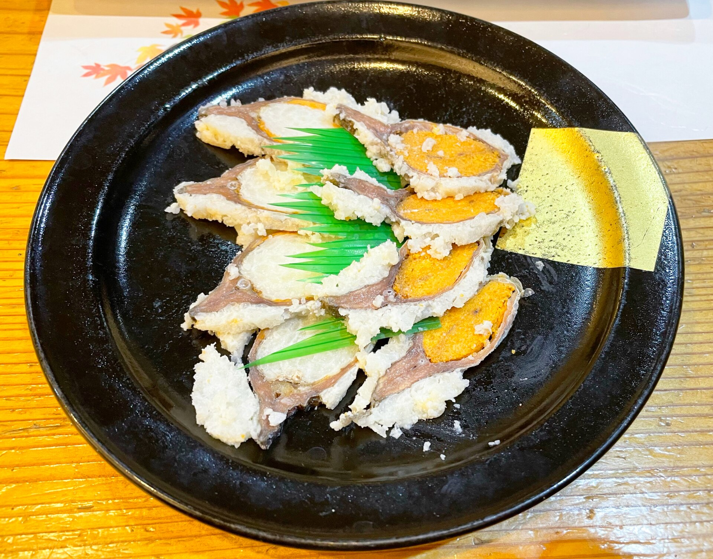
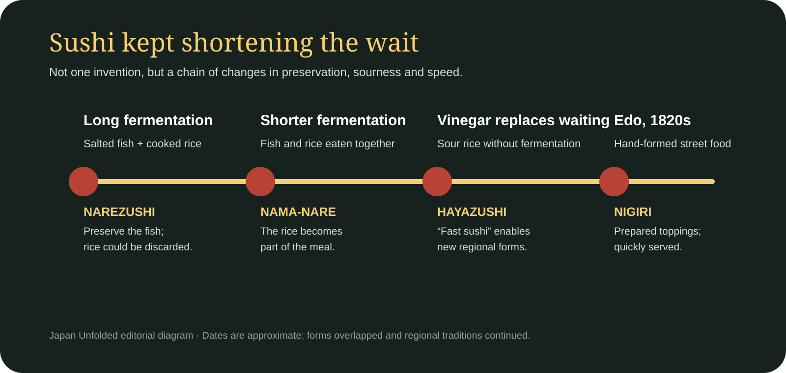

Ask someone to picture sushi and the answer is immediate: cool seafood, glossy rice, perhaps a brush of soy sauce. That image is real, but historically it is the newest layer. For most of sushi’s long transformation, “fresh raw fish” was not the defining idea. Sourness was.
The Japanese word has long been associated with an older word meaning sour. The source of that sourness changed—from lactic fermentation to vinegar—and with it changed what people ate, how long they waited and where sushi could be sold. Sushi is therefore less a single ancient recipe than a record of people repeatedly making fish-and-rice food faster.
Before the luxury counter, there was a barrel
The earliest ancestor was narezushi: salted fish packed with cooked rice and left to ferment. Lactic acid helped preserve the fish and produced the sour taste. In fully fermented forms, the rice functioned as part of the preservation process rather than as the treasured half of a composed bite. It could break down and be discarded; the fish was the prize.
Where the technique began is not settled with GPS precision. The Ministry of Agriculture, Forestry and Fisheries describes it as a fish-preservation method thought to have come from mountainous parts of China or Southeast Asia with rice culture. Food historian Terutoshi Hibino similarly writes that sushi likely emerged in southern China or Southeast Asia, while noting that sushi characters appear in Japanese documents by the mid-eighth century. Those are careful probabilities, not proof of one inventor or one migration route.

The rice stopped being packaging
A crucial change appears in references to nama-nare around the fifteenth century. The fermentation period was shortened, and people ate the rice together with the fish. This sounds modest, yet it rearranged the dish. Rice was no longer only the medium that transformed and protected the fish; it became food worth tasting.
Regional fermented sushi never followed one universal clock. MAFF’s account of Mie traditions distinguishes relatively short nama-nare from longer hon-nare, while ingredients, leaves, seasonings and household methods vary. Shiga’s famous funa-zushi, made with crucian carp from the Lake Biwa area, remains a living food rather than a museum prototype. Its powerful aroma and acidity can surprise diners expecting mild nigiri.

Vinegar became a shortcut through time
The next acceleration was hayazushi—literally “fast sushi.” Instead of waiting for microbes to sour the rice, cooks mixed it with vinegar. The National Diet Library notes that vinegar-seasoned sushi was sold in restaurants and street stalls by the Hōreki era (1751–1764). Pressed box sushi developed alongside it. The desired sourness remained, but the production schedule changed completely.
This is where a simple “ancient Japanese dish” label becomes misleading. A preserving technology had become prepared food. The same broad family could include fermented fish in Shiga, pressed forms associated with western Japan, scattered sushi, rolls and eventually hand-formed Edo nigiri. One branch did not erase the others.
Edo made sushi fast food—but not raw by default
In the 1820s, the prototype of modern nigiri-zushi appeared in Edo, today’s Tokyo. Sources disagree on whether one shop or figure deserves sole credit. The National Diet Library’s reference service lists accounts naming Matsugazushi and Hanaya Yohei and describes the evidence as competing historical attributions. It is safer to place the emergence in an urban food culture than to repeat a clean lone-genius story.
Edo’s mobile population bought quick meals from stalls. Government materials group sushi with tempura and soba as street food. Yet early nigiri was not simply untreated raw seafood. Before refrigeration, toppings might be salted, vinegared, soy-marinated, boiled or grilled. The preparation we now call Edomae encoded preservation in each topping. Kikkoman’s 2024 history notes that pieces were also larger: three could make a filling meal.
That makes the title’s answer more surprising twice over. Old sushi was fermented rather than fresh; early modern nigiri was fast, but its fish was often processed rather than naked and raw.
Refrigeration changed what “fresh” could mean
Modern cold chains widened the range of ingredients that could be served with less curing. After the Second World War, sushi shops also navigated rice controls. Hibino records a 1947 workaround in which shops operated as processing contractors: customers supplied rice and received a fixed number of pieces. Sushi’s history did not stop once nigiri appeared; regulation, refrigeration, transport and global tastes kept reshaping it.
Salmon offers a useful warning against imagining every familiar topping as timeless. Raw salmon nigiri became widely accepted comparatively recently, aided by parasite-safe supply chains and overseas aquaculture. The exact global story is more complex than a single marketing anecdote, but the larger point holds: what looks “traditional” on a modern platter may depend on very modern logistics.
How to taste the history in Japan
| What to try | What it reveals | Reality check |
|---|---|---|
| Funa-zushi in Shiga | Lactic fermentation and preservation | Strong aroma, acidity and salt; not a gentle substitute for nigiri. |
| Osaka-style pressed sushi | Fish and rice shaped in a mold | Names and toppings vary by shop and region. |
| Edomae nigiri in Tokyo | Curing, simmering and marinating as craft | “Edomae” is used broadly today; ask what the shop means. |
| Conveyor-belt sushi | Modern speed, logistics and accessibility | Prices, ordering systems and allergen support differ by chain. |
For fermented sushi, buy from an established producer or restaurant; home fermentation of fish without expert control can be unsafe. At any sushi shop, allergy and dietary questions need precision. Vinegared rice may contain sugar and other seasonings; sauces can contain soy and wheat; stock or toppings may involve fish, shellfish or egg. Raw seafood carries food-safety risks, especially for pregnant, elderly or immunocompromised diners. Current medical guidance should take priority over culinary adventure.
Watch for verbs rather than prestige: cured, pressed, fermented, marinated, simmered, grilled. They reveal sushi’s history more clearly than the price of one tuna cut. Learn su (vinegar), nare (matured/fermented in this context), and nigiri (hand-formed) with Japanese Training Lab—free web practice with no signup required.
A living family, not a straight line
The familiar platter is not a betrayal of “authentic” sushi. It is one branch of a family that kept adapting. Fermentation solved preservation. Eating the rice changed the meal. Vinegar compressed time. Edo stalls made hand-formed sushi urban fast food. Refrigeration made a different kind of freshness possible. Global diners added still more ingredients and formats.
That layered history is why the best sushi experience is not a hunt for the oldest or most expensive bite. It is noticing which problem each style solved—and which earlier idea still survives inside it.
Reporting sources
- MAFF — Nigiri-zushi, Tokyo regional cuisine
- MAFF — Narezushi traditional-food record
- National Diet Library — Fish and food in Edo
- NDL Collaborative Reference Database / Edo-Tokyo Museum Library — Origins of Edo nigiri
- Terutoshi Hibino, Kikkoman Food Forum — Sushi: The History (2024)
- Government of Japan — An Introduction to Japanese Cuisine
Sources and links checked November 19, 2026. Origin routes and individual-inventor claims remain debated; this article labels probabilities and competing attributions rather than presenting them as settled facts.
See today’s Japan beyond the plate.
Yuji edits Japan Unfolded and created DraMap. Walk real streets on TikTok LIVE, then learn useful Japanese while playing.
Japan Unfolded is independently edited by Yuji Shimizu, creator of DraMap. The app link is publisher promotion; interpretations are editorial judgments based on the cited sources.